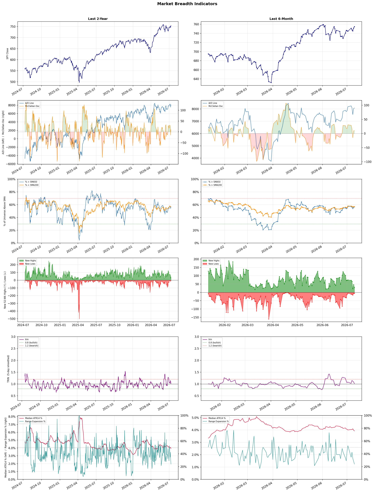

A daily market breadth and sector rotation report for active investors
| Item | Read |
|---|---|
| Regime | Selective Risk-On |
| Risk posture | Selective |
| Universe | 1,339 stocks tracked · 29 new 52-week highs · 30 active swing setups |
| Breadth | 56.8% of tracked stocks are above SMA50 — neutral range, new highs exceed new lows (29 vs 6) |
| Leadership | REIT - Hotel & Motel, Advertising Agencies, and Medical Care Facilities |
| Weakest groups | Other Industrial Metals & Mining, Chemicals, and Aerospace & Defense |
Use this report to prioritize research and chart review; validate entries, stops, liquidity, earnings, and risk before acting.
| Item | Read |
|---|---|
| Primary read | Selective Risk-On regime with Selective risk posture. |
| Research queue | SVC, RLJ, INN, APLE, PEB |
| Leadership focus | REIT - Hotel & Motel, Advertising Agencies, and Medical Care Facilities |
| Caution list | Other Industrial Metals & Mining, Chemicals, and Aerospace & Defense |
| Review prompt | Check extension risk, chart location, fundamentals, valuation, and earnings before using any research row. |
| Item | Read |
|---|---|
| Primary read | 0 active risk warnings; use screen output as watchlist input only. |
| Bullish screens | STGW, NUVL, HSBC, MUFG, SMFG |
| Bearish screens | CPRT, EQT |
| Alerts / levels | Automated trigger, stop, ATR, liquidity, reward/risk, and event-risk levels are pending future enrichment. |
| Review prompt | Open the linked chart, define trigger and invalidation, then check liquidity and event risk independently. |
Risk Posture: Selective — screen backdrop supports selective research in leading industries
Metric context: McClellan below -50 = elevated selling pressure; below -100 = washout territory. Range Expansion = share of stocks with daily range above their 20-day average. Signal Density = share of tracked names appearing in signal screens.
| Breadth Date | % > SMA50 | % > SMA200 | New Highs | New Lows | McClellan | Median Range | Avg Range | Median ATR14 | Range Expansion | Signal Density |
|---|---|---|---|---|---|---|---|---|---|---|
| 2026-07-10 | 56.8% | 56.9% | 29 | 6 | 10.1 | 2.9% | 3.6% | 3.9% | 23.9% | 4.7% |

Prior comparison date: July 9, 2026
| Metric | Prior | Current | Change |
|---|---|---|---|
| Regime | Selective Risk-On | Selective Risk-On | unchanged |
| Risk Posture | Selective | Selective | unchanged |
| % > SMA50 | 55.6% | 56.8% | +1.2 pts |
| % > SMA200 | 57.1% | 56.9% | -0.2 pts |
| New Highs | 47 | 29 | -18 |
| New Lows | 6 | 6 | +0 |
Top-10 industries entering: Oil & Gas Refining & Marketing. Top-10 industries leaving: Healthcare Plans. New multi-signal long setups: AGNC, CROX, CRSR, ETSY, EXTR, HSBC, MFG, MUFG. New multi-signal short setups: CPRT, EQT.
| Status | Tickers | Read |
|---|---|---|
| Added | ABCL, AGNC, APLE, AVTX, CPRT, CROX, CRSR, EQT | New technical screen matches vs prior report. |
| Removed | ACMR, AEVA, AMAT, ANET, ARMK, BRUN, BTSG, BXMT | No longer present in today's technical screen matches. |
| Still Active | NUVL, OMC, WRB | Appeared in both current and prior reports. |
| Promoted | OMC | Model Screen Score improved by at least 15 points. |
| Downgraded | none | Model Screen Score declined by at least 15 points. |
| Direction | Industry | ETF | Prior Rank | Current Rank | Days | Rank Change |
|---|---|---|---|---|---|---|
| Rose | Household & Personal Products | XLP | 94 | 18 | 42 | +76 |
| Rose | Insurance - Property & Casualty | KIE | 79 | 6 | 42 | +73 |
| Rose | Insurance Brokers | N/A | 83 | 14 | 42 | +69 |
| Rose | Internet Retail | N/A | 90 | 22 | 28 | +68 |
| Rose | Building Products & Equipment | XHB | 80 | 16 | 35 | +64 |
Bull: The Household & Personal Products sector is experiencing rising relative strength primarily due to increasing consumer confidence and spending, as indicated by the recent uptick in consumer stocks. The positive sentiment surrounding consumer products, highlighted by articles discussing strong industry momentum and specific outperformers like Procter & Gamble, suggests that these companies are well-positioned to benefit from stable demand, even amid broader market uncertainties such as potential Fed rate hikes and geopolitical tensions. This resilience in consumer staples enhances their attractiveness as defensive investments, further bolstering the sector's relative performance.
Bear: While the bull thesis highlights rising consumer confidence and spending, it overlooks the potential impact of inflationary pressures and the looming threat of Fed rate hikes, which could dampen consumer purchasing power and overall demand for household and personal products. Additionally, geopolitical tensions, such as those involving the US and Iran, could disrupt supply chains and lead to increased costs, undermining the profitability of companies in this sector. As a result, the perceived resilience of consumer staples may be overstated, and investors should remain cautious about the sustainability of this upward trend in the face of these significant headwinds.
Verdict: The Household & Personal Products sector is likely experiencing rising relative strength due to increased consumer confidence and spending, which supports stable demand for essential goods. However, investors should remain cautious of inflationary pressures and potential Fed rate hikes that could erode consumer purchasing power, posing a significant risk to the sustainability of this upward trend. It may be prudent to monitor economic indicators closely and consider defensive positions within the sector while being aware of these macroeconomic challenges.
Sources: Yahoo Finance, Google News
Bull: The rising relative strength of the Property & Casualty insurance sector can be attributed to a combination of favorable market conditions and positive earnings reports, as highlighted in recent headlines. The industry's digitalization and exposure growth, as noted in the Yahoo Finance article, are driving operational efficiencies and expanding market opportunities, while Q1 earnings highlights from companies like Assured Guaranty and Skyward Specialty Insurance suggest robust financial performance, reinforcing investor confidence in the sector. Additionally, the positive sentiment surrounding ETFs like the State Street SPDR S&P Insurance ETF (KIE) indicates a growing recognition of the sector's resilience and potential for continued growth.
Bear: While the rising relative strength of the Property & Casualty insurance sector may seem promising, it is essential to consider the underlying risks associated with increasing claims due to climate change, economic uncertainty, and potential regulatory changes that could impact profitability. Additionally, the digitalization trend, while beneficial, may not be enough to offset the competitive pressures and rising operational costs that could erode margins, making the current bullish sentiment overly optimistic and potentially unsustainable in the long run.
Verdict: The Property & Casualty insurance sector is experiencing rising relative strength due to favorable market conditions, strong earnings reports, and advancements in digitalization that enhance operational efficiency and market reach. However, investors should remain cautious of key risks, particularly the increasing claims driven by climate change and economic uncertainties, which could pressure profitability and challenge the sustainability of the current bullish sentiment. It is advisable to monitor these risk factors closely while considering investment opportunities in this sector.
Sources: Yahoo Finance, Google News
Bull: The Insurance Brokers industry is experiencing a rising relative strength primarily due to robust demand for brokerage services and ongoing mergers and acquisitions (M&A) activity, as highlighted in the Yahoo Finance article. Despite recent fears surrounding AI disruption, which have led to short-term selloffs, the underlying fundamentals remain strong, with companies like Brown & Brown demonstrating solid earnings in Q1, indicating resilience and growth potential in a competitive landscape. This combination of demand and strategic consolidation positions the industry favorably for continued performance, especially as the cycle turns.
Bear: While the bull thesis highlights strong demand and M&A activity, the recent selloff triggered by AI disruption fears suggests a significant vulnerability within the industry. As technology continues to evolve, the potential for AI to streamline operations and reduce the need for traditional brokerage services could undermine long-term growth prospects. Furthermore, the compression of multiples and the decline from five-year highs indicate that investor sentiment is shifting, raising concerns about the sustainability of current valuations amid an uncertain economic cycle.
Verdict: The Insurance Brokers industry is likely experiencing a rise in relative strength due to robust demand for brokerage services and active M&A activity, which are driving growth and consolidation. However, the key risk lies in the potential disruption from AI technology, which could streamline operations and diminish the need for traditional brokerage services, potentially undermining long-term growth and investor confidence. Investors should closely monitor advancements in AI and their impact on industry dynamics while considering the current demand and earnings resilience as indicators of short-term performance.
Sources: Google News
Bull: The Internet Retail sector is experiencing a rising relative strength primarily due to the increasing consumer shift towards e-commerce, as highlighted in the Motley Fool's article on the best e-commerce stocks for 2026, indicating robust growth potential. Additionally, the positive Q4 highlights from Wayfair suggest that online retailers are successfully navigating the current economic landscape, which is further supported by the overall favorable retail sector P/E ratios discussed by Investopedia, indicating that investors are optimistic about future earnings in this space. This combination of strong performance metrics and positive market sentiment positions Internet Retail favorably compared to other industries.
Bear: While the bull thesis highlights a rising relative strength and optimistic growth potential for the Internet Retail sector, it overlooks critical headwinds such as potential market saturation and increasing competition from both established players and new entrants. Additionally, the reliance on consumer discretionary spending, which can be volatile in economic downturns, raises concerns about the sustainability of growth, especially as rising inflation and interest rates may pressure consumer budgets, leading to a potential slowdown in e-commerce demand.
Verdict: The Internet Retail sector's rising strength is fundamentally driven by a sustained shift towards e-commerce, bolstered by positive performance metrics from key players like Wayfair and favorable investor sentiment reflected in retail sector P/E ratios. However, the key risk lies in potential market saturation and the volatility of consumer discretionary spending, particularly in the face of rising inflation and interest rates, which could dampen future growth prospects. Investors should closely monitor economic indicators and consumer behavior trends to assess the sustainability of this growth trajectory.
Sources: Google News
Bull: The Building Products & Equipment sector, as represented by the SPDR S&P Homebuilders ETF (XHB), is experiencing a rise in relative strength primarily due to the resurgence in the housing market, evidenced by the strong performance of iBuyer stocks like Opendoor and Offerpad, which have seen significant price jumps. Additionally, positive sentiment surrounding major homebuilders like Lennar suggests a potential recovery in housing demand, further bolstered by a broader uptick in construction and equipment stocks, such as United Rentals, which has climbed 39% in the past three months, indicating growing confidence in the construction sector's resilience and profitability.
Bear: While the recent uptick in iBuyer stocks and the performance of major homebuilders like Lennar may suggest a recovery in the housing market, this optimism overlooks critical headwinds such as rising interest rates, which continue to dampen affordability for potential homebuyers. Additionally, the construction and building products sector is facing persistent supply chain challenges and inflationary pressures, which could erode profit margins and limit growth potential, making the current rally in stocks like United Rentals potentially unsustainable.
Verdict: The Building Products & Equipment sector is experiencing a rise due to a rebound in the housing market, driven by strong performances from iBuyer stocks and major homebuilders, signaling increased demand for housing and construction services. However, the key risk lies in rising interest rates and ongoing supply chain challenges, which could hinder affordability and profit margins, potentially undermining the sustainability of this rally. Investors should closely monitor interest rate trends and supply chain developments to assess the viability of continued growth in this sector.
Sources: Yahoo Finance, Google News
| Direction | Industry | ETF | Prior Rank | Current Rank | Days | Rank Change |
|---|---|---|---|---|---|---|
| Fell | Aerospace & Defense | ITA | 11 | 86 | 42 | -75 |
| Fell | Steel | SLX | 8 | 79 | 28 | -71 |
| Fell | Copper | COPX | 21 | 84 | 42 | -63 |
| Fell | Other Industrial Metals & Mining | N/A | 26 | 88 | 42 | -62 |
| Fell | Oil & Gas Integrated | XLE | 28 | 82 | 35 | -54 |
Bear: While the bull analyst attributes the relative strength decline to short-term volatility and profit-taking, a more concerning issue is the potential for overvaluation in the Aerospace & Defense sector, especially after a significant rally. Furthermore, the geopolitical landscape remains fraught with uncertainty, as evidenced by the recent headlines about rising tensions, which could lead to budgetary constraints or shifts in defense priorities if political dynamics change. This suggests that the anticipated long-term growth may not materialize as expected, creating a risk of correction in defense stocks.
Bull: The Aerospace & Defense sector is experiencing a relative strength decline primarily due to market volatility and geopolitical fears, as highlighted by the recent headlines mentioning concerns over potential conflicts, such as the Iran situation sparked by Trump. Additionally, while defense spending is set to surge—evidenced by NATO's commitment to allocate 5% of GDP on defense by 2035—the market may be reacting to short-term fluctuations and profit-taking after a strong rally, as indicated by the surge in defense stocks and the acknowledgment that the rearmament cycle may still be in its early stages. This combination of macroeconomic uncertainty and profit-taking is likely contributing to the sector's relative weakness despite strong long-term fundamentals.
Verdict: The Aerospace & Defense sector's recent decline can be attributed to a combination of market volatility and profit-taking following a strong rally, despite long-term growth prospects bolstered by increased defense spending commitments. However, the key risk lies in the potential for overvaluation and shifting geopolitical dynamics that could lead to budgetary constraints or altered defense priorities, which may undermine the anticipated growth and trigger a correction in defense stocks. Investors should remain cautious and consider re-evaluating positions in light of these risks.
Sources: Yahoo Finance, Google News
Bear: While the bull analyst points to macroeconomic challenges and regulatory wins as potential catalysts for the steel industry, the reality is that the recent highs in the VanEck Steel ETF (SLX) may be misleading, driven more by short-term sentiment than sustainable demand. The persistent relative weakness and falling trend indicate that the steel sector is grappling with structural issues, such as overcapacity, rising input costs, and increasing competition from alternative materials like aluminum and composites, which could undermine long-term profitability and growth prospects. Furthermore, the shift in investor focus towards copper stocks highlights a lack of confidence in steel's ability to maintain momentum, suggesting that any gains may be fleeting rather than indicative of a robust recovery.
Bull: The recent relative weakness in the steel industry, as indicated by the falling trend of the VanEck Steel ETF (SLX) compared to other industries, can be attributed to broader macroeconomic challenges, including fluctuating demand and competition from alternative materials. Despite the positive headlines highlighting the ETF's new 52-week highs and favorable regulatory developments for steelmakers, such as the recent win in Washington, the focus on rising copper stocks and industry-specific challenges suggests that investors may be reallocating capital to sectors perceived as having stronger growth potential, thereby impacting steel's relative strength.
Verdict: The steel industry's recent decline can be fundamentally attributed to structural challenges such as overcapacity and rising input costs, compounded by increasing competition from alternative materials. The key risk highlighted by the bear case is that any short-term gains in the VanEck Steel ETF (SLX) may not be sustainable, as they could be driven by fleeting investor sentiment rather than a solid recovery in demand. Investors should exercise caution and consider reallocating capital to sectors with stronger growth potential, such as copper, to mitigate exposure to steel's ongoing weaknesses.
Sources: Yahoo Finance, Google News
Bear: While the bull analyst highlights concerns about global manufacturing and a shift toward AI investments, it's important to recognize that the copper market is facing significant headwinds beyond just sentiment. The ongoing geopolitical tensions, potential supply chain disruptions, and increased regulatory pressures on mining operations could severely impact copper production and availability. Additionally, the recent surge in prices may have already priced in much of the expected demand from the AI boom, leaving little room for further growth if economic conditions deteriorate or if alternative materials gain traction in technology applications.
Bull: Copper's relative strength may be falling due to concerns about a potential slowdown in global manufacturing, as highlighted in the headline "If Global Manufacturing Weakens, Here’s What Happens to This Copper ETF." Additionally, the focus on alternative sectors, such as AI and software, as indicated by multiple headlines emphasizing AI-related investments, could be diverting attention and capital away from copper, despite its critical role in technology and infrastructure. This shift in investor sentiment, coupled with macroeconomic uncertainties, is likely contributing to copper's weaker relative performance compared to other industries.
Verdict: The copper industry's recent decline is primarily driven by concerns over a potential slowdown in global manufacturing, which has led to reduced demand forecasts and investor sentiment shifting towards alternative sectors like AI. Key risks include geopolitical tensions and supply chain disruptions that could further constrain copper production, potentially exacerbating the supply-demand imbalance if economic conditions worsen. Investors should closely monitor these geopolitical factors and demand indicators to make informed decisions regarding copper investments.
Sources: Yahoo Finance, Google News
Bear: While the bull analyst highlights a shift towards specific metals and AI innovations, this perspective overlooks the fundamental challenges facing the broader Other Industrial Metals & Mining sector, including declining demand due to economic uncertainties and potential regulatory pressures. Additionally, the focus on specialized players may exacerbate the relative weakness of traditional firms, as they struggle to compete against technologically advanced companies that can deliver better margins and efficiencies, leading to further capital flight from the sector. This suggests a more cautious outlook for the broader industry, as investors may remain skeptical about the growth potential of traditional industrial metals amid evolving market dynamics.
Bull: The relative weakness of the Other Industrial Metals & Mining sector can be attributed to a broader market focus on specific metals, such as copper, which are highlighted in recent articles as top investment opportunities for 2026. Additionally, the emergence of AI-powered innovations in the mining sector, as noted by the Boston Consulting Group, may suggest a shift in investor interest towards companies that are leveraging technology for efficiency and growth, potentially sidelining traditional industrial metals firms. This trend is compounded by the competitive landscape, as seen in the BofA's selection of top stock picks, which may favor more specialized or technologically advanced players over the broader sector.
Verdict: The falling trend in the Other Industrial Metals & Mining sector is primarily driven by a shift in investor focus towards more specialized metals like copper and technologically advanced companies leveraging AI innovations, which are perceived to offer better growth potential. However, the key risk lies in the fundamental challenges facing traditional firms, including declining demand and increasing regulatory pressures, which could hinder their competitiveness and lead to further capital flight from the sector. Investors should remain cautious and consider reallocating resources towards companies that demonstrate technological advancements and adaptability in this evolving market landscape.
Sources: Google News
Bear: While the bull analyst attributes the relative strength decline in the Oil & Gas Integrated sector to mixed sentiment and geopolitical tensions, it is crucial to recognize that these factors have long been a part of the energy landscape and may not justify the current weakness. The sector's inconsistent performance, coupled with a broader trend of falling relative strength, suggests deeper structural issues, such as increasing competition from renewable energy sources, regulatory pressures aimed at reducing carbon emissions, and potential long-term declines in fossil fuel demand as global energy consumption shifts. These headwinds could undermine the sector's recovery potential, regardless of short-term geopolitical fluctuations.
Bull: The Oil & Gas Integrated sector is experiencing a relative strength decline primarily due to mixed market sentiment and geopolitical tensions, as indicated by the headlines regarding renewed US-Iran tensions that could impact oil supply and prices. Additionally, the inconsistent performance of energy stocks, highlighted by both advances and softness in the sector, suggests that investors are weighing the potential for volatility against the upcoming Q2 earnings season, leading to cautious trading behavior.
Verdict: The Oil & Gas Integrated sector's decline is primarily driven by mixed market sentiment influenced by geopolitical tensions, particularly regarding US-Iran relations, which create uncertainty around oil supply and pricing. However, the bear case highlights a critical risk: the sector faces structural challenges from increasing competition with renewables, regulatory pressures, and a potential long-term decline in fossil fuel demand, which could hinder recovery prospects. Investors should approach the sector with caution, considering these underlying issues alongside short-term geopolitical factors.
Sources: Yahoo Finance, Google News
| Industry | Rank | ETF | 7d | 14d | 28d | 42d | Chg 42d | Size | 20D | 60D | Composite | Active Setups |
|---|---|---|---|---|---|---|---|---|---|---|---|---|
| REIT - Hotel & Motel | 1 | XLRE | 9 | 4 | 2 | 7 | +6 | 9 | 55.1% | 88.5% | 0.950 | 0 |
| Advertising Agencies | 2 | N/A | 10 | 13 | 37 | 40 | +38 | 7 | 15.5% | 51.5% | 0.936 | 1 |
| Medical Care Facilities | 3 | IHF | 7 | 7 | 36 | 43 | +40 | 9 | 21.2% | 28.6% | 0.927 | 0 |
| Airlines | 4 | N/A | 2 | 1 | 11 | 14 | +10 | 8 | 20.6% | 25.8% | 0.923 | 1 |
| Biotechnology | 5 | XBI | 3 | 8 | 55 | 20 | +15 | 93 | 23.9% | 26.4% | 0.915 | 1 |
| Insurance - Property & Casualty | 6 | KIE | 5 | 11 | 60 | 79 | +73 | 8 | 17.6% | 23.4% | 0.912 | 1 |
| Diagnostics & Research | 7 | N/A | 4 | 3 | 14 | 17 | +10 | 16 | 17.3% | 32.4% | 0.893 | 1 |
| Health Information Services | 8 | N/A | 8 | 9 | 19 | 23 | +15 | 12 | 21.1% | 37.3% | 0.889 | 0 |
| Banks - Diversified | 9 | N/A | 11 | 12 | 12 | 22 | +13 | 16 | 10.5% | 13.8% | 0.866 | 0 |
| Oil & Gas Refining & Marketing | 10 | CRAK | 47 | 57 | 74 | 66 | +56 | 7 | 14.1% | 15.7% | 0.849 | 0 |
Rank columns (7d–42d) show the industry's rank that many trading days ago — lower is stronger. Chg 42d = rank change vs 42 trading days ago — positive means the industry moved up. 20D and 60D are the mean stock return within the industry over that period. Active Setups: count of today's swing-trade candidates from this industry appearing across all signal screens.
| Industry | Rank | ETF | 7d | 14d | 28d | 42d | Chg 42d | Size | 20D | 60D | Composite | Active Setups |
|---|---|---|---|---|---|---|---|---|---|---|---|---|
| Other Industrial Metals & Mining | 88 | N/A | 82 | 78 | 71 | 26 | -62 | 21 | -7.9% | -14.1% | 0.100 | 1 |
| Chemicals | 87 | N/A | 87 | 85 | 89 | 65 | -22 | 8 | -12.7% | -19.6% | 0.119 | 0 |
| Aerospace & Defense | 86 | ITA | 66 | 80 | 64 | 11 | -75 | 26 | -9.3% | -15.0% | 0.154 | 0 |
| Oil & Gas E&P | 85 | XOP | 85 | 83 | 85 | 81 | -4 | 26 | -10.3% | -8.9% | 0.162 | 0 |
| Copper | 84 | COPX | 80 | 79 | 56 | 21 | -63 | 6 | -0.9% | -15.0% | 0.197 | 0 |
| Utilities - Renewable | 83 | N/A | 75 | 59 | N/A | N/A | N/A | 7 | -8.9% | -4.9% | 0.202 | 0 |
| Oil & Gas Integrated | 82 | XLE | 84 | 81 | 65 | 60 | -22 | 10 | -7.0% | -4.2% | 0.241 | 0 |
| Gold | 81 | GDX | 86 | 87 | 97 | 61 | -20 | 27 | 1.1% | -27.0% | 0.245 | 0 |
| Telecom Services | 80 | N/A | 73 | 77 | 78 | 59 | -21 | 19 | -4.7% | -9.3% | 0.247 | 0 |
| Steel | 79 | SLX | 78 | 76 | 8 | 9 | -70 | 5 | -9.0% | 1.2% | 0.261 | 0 |
Rank columns (7d–42d) show the industry's rank that many trading days ago — lower is stronger. Chg 42d = rank change vs 42 trading days ago — positive means the industry moved up. 20D and 60D are the mean stock return within the industry over that period. Active Setups: count of today's swing-trade candidates from this industry appearing across all signal screens.
These are research candidates from top-ranked stocks, capped at five names per industry to avoid over-concentration. Returns shown (60D, 120D, 250D) are historical — they reflect where prices have already moved, not forward expectations. Extension Risk flags names that may require extra patience or a better entry point. They are not buy signals.
Chart: TV = TradingView chart (opens in browser); PDF = local chart file (if downloaded).
| Ticker | Name | Industry | Industry Rank | Market Cap | 60D Hist | 120D Hist | 250D Hist | Extension Risk | Research Reason | Chart |
|---|---|---|---|---|---|---|---|---|---|---|
| SVC | Service Properties Trust | REIT - Hotel & Motel | 1 | N/A | 600.8% | 314.6% | 229.5% | Very extended | Top-ranked in industry; very extended | TV |
| RLJ | RLJ Lodging Trust | REIT - Hotel & Motel | 1 | N/A | 40.2% | 49.9% | 48.6% | Constructive | Top-ranked in industry | TV |
| INN | Summit Hotel Properties Inc | REIT - Hotel & Motel | 1 | N/A | 32.6% | 36.9% | 15.6% | Constructive | Top-ranked in industry | TV |
| APLE | Apple Hospitality REIT Inc | REIT - Hotel & Motel | 1 | N/A | 30.8% | 33.2% | 32.4% | Constructive | Top-ranked in industry | TV |
| PEB | Pebblebrook Hotel Trust | REIT - Hotel & Motel | 1 | N/A | 28.8% | 49.9% | 66.0% | Constructive | Top-ranked in industry | TV |
| EVC | Entravision Communications | Advertising Agencies | 2 | N/A | 245.9% | 249.0% | 370.4% | Very extended | Top-ranked in industry; very extended | TV |
| MGNI | Magnite | Advertising Agencies | 2 | N/A | 63.2% | 36.5% | -9.9% | Extended | Top-ranked in industry; extended | TV |
| STGW | Stagwell | Advertising Agencies | 2 | N/A | 19.1% | 25.6% | 68.0% | Constructive | Top-ranked in industry | TV |
| DV | DoubleVerify | Advertising Agencies | 2 | N/A | 15.3% | 10.5% | -20.2% | Constructive | Top-ranked in industry | TV |
| OMC | Omnicom Group | Advertising Agencies | 2 | N/A | 7.1% | 1.3% | 12.6% | Constructive | Top-ranked in industry | TV |
| CMPS | COMPASS Pathways | Medical Care Facilities | 3 | N/A | 137.2% | 86.6% | 271.2% | Very extended | Top-ranked in industry; very extended | TV |
| LFST | LifeStance Health | Medical Care Facilities | 3 | N/A | 64.4% | 43.9% | 137.4% | Extended | Top-ranked in industry; extended | TV |
| AVAH | Aveanna Healthcare | Medical Care Facilities | 3 | N/A | 46.3% | -0.6% | 138.9% | Constructive | Top-ranked in industry | TV |
| ACHC | Acadia Healthcare | Medical Care Facilities | 3 | N/A | 17.8% | 162.6% | 28.4% | Extended | Top-ranked in industry; extended | TV |
| THC | Tenet Healthcare | Medical Care Facilities | 3 | N/A | 3.9% | 1.5% | 16.2% | Constructive | Top-ranked in industry | TV |
| ULCC | Frontier Group | Airlines | 4 | N/A | 75.3% | 36.6% | 66.8% | Extended | Top-ranked in industry; extended | TV |
| AAL | American Airlines | Airlines | 4 | N/A | 39.7% | 7.9% | 38.7% | Constructive | Top-ranked in industry | TV |
| UAL | United Airlines | Airlines | 4 | N/A | 29.6% | 8.6% | 43.7% | Constructive | Top-ranked in industry | TV |
| ALK | Alaska Air | Airlines | 4 | N/A | 16.0% | -0.5% | -5.9% | Constructive | Top-ranked in industry | TV |
| JBLU | JetBlue Airways | Airlines | 4 | N/A | 2.9% | 15.7% | 31.2% | Constructive | Top-ranked in industry | TV |
These are technical screen matches from existing signal files. They are not trade recommendations. Trigger, stop, ATR, liquidity, reward/risk, and event risk still require separate validation until those inputs are available.
Model Screen Score is weighted by signal count, industry rank, freshness, and setup type. It is not a probability of profit, expected return, or suitability rating. Industry cap: max 3 candidates per industry.
Signal glossary: Momentum Pullback = stock in an uptrend that has pulled back 10–30% and shows re-entry conditions. MA Compression = short- and long-term moving averages converging, often preceding a directional move. Three-Day Up/Down = three consecutive closes in the same direction. New 52Wk High/Low = price reached a new annual extreme.
Chart: TV = TradingView chart (opens in browser); PDF = local chart file (if downloaded).
| Ticker | Industry | Setups | Close | Industry Rank | Signal Count | Model Screen Score | Reason | Chart |
|---|---|---|---|---|---|---|---|---|
| STGW | Advertising Agencies | New 52Wk High; Three-Day Up | 7.81 | 2 | 2 | 100 | Multi-signal; top industry breakout | TV |
| NUVL | Biotechnology | New 52Wk High; Three-Day Up | 123.90 | 5 | 2 | 93 | Multi-signal; top industry breakout | TV |
| HSBC | Banks - Diversified | New 52Wk High; Three-Day Up | 99.09 | 9 | 2 | 85 | Multi-signal; top industry breakout | TV |
| MUFG | Banks - Diversified | New 52Wk High; Three-Day Up | 21.65 | 9 | 2 | 85 | Multi-signal; top industry breakout | TV |
| SMFG | Banks - Diversified | New 52Wk High; Three-Day Up | 25.74 | 9 | 2 | 85 | Multi-signal; top industry breakout | TV |
| RAMP | Software - Infrastructure | New 52Wk High; Three-Day Up | 37.88 | 11 | 2 | 85 | Multi-signal; new-high strength | TV |
| MFG | Banks - Regional | New 52Wk High; Three-Day Up | 10.48 | 13 | 2 | 85 | Multi-signal; new-high strength | TV |
| RF | Banks - Regional | New 52Wk High; Three-Day Up | 31.02 | 13 | 2 | 85 | Multi-signal; new-high strength | TV |
| CROX | Footwear & Accessories | New 52Wk High; Three-Day Up | 132.78 | 21 | 2 | 77 | Multi-signal; new-high strength | TV |
| ETSY | Internet Retail | New 52Wk High; Three-Day Up | 81.05 | 22 | 2 | 77 | Multi-signal; new-high strength | TV |
| CRSR | Computer Hardware | Momentum Pullback; Three-Day Up | 9.66 | 27 | 2 | 70 | Multi-signal; pullback setup | TV |
| SN | Furnishings, Fixtures & Appliances | New 52Wk High; Three-Day Up | 152.65 | 32 | 2 | 70 | Multi-signal; new-high strength | TV |
| PBI | Integrated Freight & Logistics | New 52Wk High; Three-Day Up | 18.33 | 35 | 2 | 70 | Multi-signal; new-high strength | TV |
| EXTR | Communication Equipment | New 52Wk High; Three-Day Up | 33.71 | 48 | 2 | 65 | Multi-signal; new-high strength | TV |
| NMR | Capital Markets | New 52Wk High; Three-Day Up | 9.66 | 59 | 2 | 65 | Multi-signal; new-high strength | TV |
| TIGO | Telecom Services | New 52Wk High; Three-Day Up | 96.96 | 80 | 2 | 55 | Multi-signal; new-high strength | TV |
| AGNC | REIT - Mortgage | MA Compression; Three-Day Up | 11.13 | 64 | 2 | 50 | Multi-signal; compression setup | TV |
| NLY | REIT - Mortgage | MA Compression; Three-Day Up | 22.86 | 64 | 2 | 50 | Multi-signal; compression setup | TV |
| OMC | Advertising Agencies | MA Compression | 81.93 | 2 | 1 | 60 | Single-signal; top industry setup | TV |
| LUV | Airlines | Momentum Pullback | 48.43 | 4 | 1 | 58 | Single-signal; top industry pullback | TV |
| ULCC | Airlines | Momentum Pullback | 6.94 | 4 | 1 | 58 | Single-signal; top industry pullback | TV |
| ABCL | Biotechnology | Momentum Pullback | 6.80 | 5 | 1 | 58 | Single-signal; top industry pullback | TV |
| AVTX | Biotechnology | Momentum Pullback | 19.21 | 5 | 1 | 58 | Single-signal; top industry pullback | TV |
| TWST | Diagnostics & Research | Momentum Pullback | 90.64 | 7 | 1 | 58 | Single-signal; top industry pullback | TV |
| APLE | REIT - Hotel & Motel | Three-Day Up | 16.56 | 1 | 1 | 55 | Single-signal; top industry setup | TV |
| WRB | Insurance - Property & Casualty | MA Compression | 72.19 | 6 | 1 | 53 | Single-signal; top industry setup | TV |
| RXT | Software - Infrastructure | Momentum Pullback | 5.34 | 11 | 1 | 50 | Single-signal; pullback setup | TV |
| TDC | Software - Infrastructure | Momentum Pullback | 33.74 | 11 | 1 | 50 | Single-signal; pullback setup | TV |
Bearish setups — stocks making new lows or showing persistent downside patterns. Validate carefully before acting.
| Ticker | Industry | Setups | Close | Industry Rank | Signal Count | Model Screen Score | Reason | Chart |
|---|---|---|---|---|---|---|---|---|
| CPRT | Specialty Business Services | New 52Wk Low; Three-Day Down | 27.51 | 63 | 2 | 25 | Multi-signal; new-low weakness | TV |
| EQT | Oil & Gas E&P | New 52Wk Low; Three-Day Down | 48.85 | 85 | 2 | 15 | Multi-signal; new-low weakness | TV |
How To Use This Report
| Use | Purpose |
|---|---|
| Market map | Start with breadth, regime, risk warnings, and what changed since the prior report. |
| Industry scan | Use leading, deteriorating, rising, and declining industries to focus research. |
| Research queue | Treat long-term candidates as names for deeper fundamental, valuation, and chart review. |
| Technical review | Treat bullish and bearish screen matches as watchlist inputs that require independent trigger, stop, liquidity, and event-risk checks. |
| Source follow-up | Use chart links and source files to verify raw inputs before relying on any row. |
What This Report Is Not
| Not | Meaning |
|---|---|
| Investment advice | The report does not evaluate personal objectives, risk tolerance, tax situation, account type, or suitability. |
| Buy/sell recommendation | Named tickers are research candidates or screen matches, not recommendations to transact. |
| Price target | The report does not provide fair value estimates, targets, or expected returns. |
| Trade plan | Trigger, stop, sizing, reward/risk, liquidity, and event-risk review remain separate user work. |
| Performance claim | Model Screen Score is not validated historical performance or a forecast of future results. |
| Item | Note |
|---|---|
| Version | Daily Report Methodology v1 |
| Model Screen Score | Screen-fit rank based on signal count, industry rank, freshness, and setup type. |
| Not predictive proof | The score is not expected return, probability of profit, historical validation, or suitability analysis. |
| Industry ranks | Composite industry ranks use existing daily ranking outputs and historical rank columns when available. |
| Research candidates | Long-term rows are research candidates from ranked stocks and leading industries, with historical returns labeled as historical only. |
| Technical matches | Bullish and bearish rows are screen matches requiring independent chart, trigger, stop, liquidity, and event-risk review. |
| Source | Status | Rows | Path |
|---|---|---|---|
| Market breadth | present | 1255 | breadth_20260710.csv |
| Industry composite rankings | present | 88 | all_industry_composite_20260710.csv |
| Top ranked stocks | present | 185 | top_ranked_composite_20260710.csv |
| All ranked stocks | present | 1339 | all_stocks_composite_sorted_20260710.csv |
| Top momentum pullbacks | present | 1490 | top_momentum_pullbacks_20260710.csv |
| MA compression | present | 1490 | ma_compression_stocks_20260710.csv |
| Three-day up/down | present | 138 | three_day_up_down_stocks_20260710.csv |
| New 52-week members | present | 35 | breadth_new_52wk_members_20260710.csv |
This report is generated from automated technical screens and is for informational and research purposes only. It is not investment advice, a solicitation, or a recommendation to buy or sell any security. Past performance is not indicative of future results. You are solely responsible for your own investment decisions. Consult a licensed financial advisor before acting on any information herein.